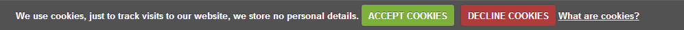

Введение Что находится в шаблоне и для чего его можно использовать
Благодарим Вас за приобретение шаблона веб-сайта. Данное руководство покажет, как работать с шаблоном, как его редактировать и сделать "живым" сайтом.
Контент всех страниц написан на HTML, а динамическая анимация - на JavaScript.
Разархивирование шаблона
В распакованном архиве шаблона находятся 3 папки: "documentation", "screenshots" и "site". Также вы увидите архив "sources_############.zip" который нужно распаковать.
Папка sources содержит исходные файлы темы. Она защищена паролем и ее можно открыть только при помощи программ WinZip (Windows OS) и StuffitExpander (MAC OS).
Оба приложения можно скачать бесплатно для пробного использования:
При разархивировании файла "sources_############.zip" нужно будет ввести пароль, который можно найти на странице скачивания шаблона (откройте ссылку в электронном письме от нашей компании).
После распаковывания шаблон будет состоять из 4 папок: "documentation", "screenshots", "site" и "sources".
Общие сведения
Программные требования
Adobe Dreamweaver (скачать бесплатно пробную версию). Используется для редактирования файлов .HTML, .JS, .PHP и .CSS.
Adobe Photoshop CS и выше (скачать бесплатно пробную версию). Используется для редактирования файлов .PSD.
Структура папок и файлов шаблона выглядит следующим образом:
- documentation – содержит документацию по редактированию и установке шаблона.
- screenshots - содержит скриншоты шаблона.
- site - содержит .html файлы шаблона.
- bat - содержит рабочий .php скрипт контактной формы.
- css - содержит все файлы .css, используемые в дизайне.
- images - содержит все изображения, используемые в файлах .html.
- js - содержит библиотеки JavaScript и плагины jQuery.
- search - содержит файлы .js, .php и .css поискового движка.
- sources содержит исходные файлы темы.
- psd - содержит файлы .psd Adobe Photoshop.
- less - содержит файлы .css LESS, используемые в шаблоне.
- fonts_info.txt - содержит список шрифтов, используемых в шаблоне.
- info.txt - содержит информацию о защищенной паролем папке "sources".
Редактирование шаблона
При работе с шаблоном необходимо редактировать файлы .html, .css, .js и .psd.
Редактирование файлов HTML и CSS
Все редактируемые файлы HTML находятся в папке "site" шаблона (index.html, index-1.html,index-2.html, и т.п.). Каждый файл index-#.html представляет отдельную страницу шаблона.
Чтобы открыть файл .html при помощи программы Adobe Dreamweaver, щелкните правой кнопкой мыши по файлу и в контекстном меню выберите Открыть с помощью > Adobe Dreamweaver. Когда файл открыт, его можно редактировать.
Adobe Dreamweaver - это рекомендуемое приложение, позволяющее редактировать контент файлов HTML в визуальном режиме. Откройте любой файл .html и нажмите кнопку Live Code в верхней части экрана, чтобы переключиться в визуальный режим.

{kind=link}
Вы также можете воспользоваться детальным текстовым и видео туториалом Как редактировать файлы HTML при помощи Adobe Dreamweaver.
Файлы CSS используются для изменения внешнего вида шаблона, например шрифтов (семья шрифтов, размер, цвет и т.п.), фон, значение ширины колонки и т.д. Файлы css можно редактировать при помощи программы Adobe Dreamweaver. В нашем онлайн-центре поддержки находятся детальные туториалы о том, как работать с файлами CSS.
Редактирование файлов PSD
Файлы PSD находятся в папке "sources/psd" шаблона. PSD - это исходные файлы дизайна шаблона. Они делятся на слои, поэтому любую часть дизайна шаблона можно изменить.
Во время редактирования можно использовать файлы PSD для редактирования картинок контента страниц или изображений, составляющих дизайн.

Более детальную информацию о работе с Photoshop можно найти в туториалах.
Пользовательские шрифты
В дизайне некоторых шаблонов могут использоваться нестандартные шрифты. По умолчанию, интернет-браузер может использовать только шрифты, установленные в операционной системе. Другими словами, если в дизайне сайта используются пользовательские шрифты, не установленные на компьютере, эти шрифты отображаться не будут. Вместо них будут отображаться стандартные шрифты. Поэтому веб-разработчики ищут альтернативные решения. В наших шаблонах пользовательские шрифты добавляются при помощи технологии Google Web Fonts.
Google Web Fonts
Более детальную информацию об использовании шрифтов Google Web Fonts можно найти в туториале Как работать со шрифтами Google web Fonts.
Туториалы по редактированию
Как редактиовать текст
Шаблоны основаны на HTML, поэтому весь контент находится в файлах .html.
- Перейдите в папку site шаблона.
- Откройте файл index.html в редакторе HTML.
- Можно использовать функцию поиска CTRL+F , чтобы найти нужный текст.
- Измените текст в редакторе HTML. Сохраните файл и откройте в браузере, чтобы увидеть изменения.
Также, для поиска нужных блоков, можно использовать браузерные инструменты разработчика. Более детальная информация о инструментах разработчиков находится в описаниях и туториалах.
Предлагаем ознакомиться со статьей Инструменты Разработчика.
Вы можете посмотреть детальный видео туториал Как редактировать текст в шаблонах JS Animated
Как редактировать изображения
Перейдите в папку 'site/img' шаблона. Вы можете загружать изображения с тем же названием и расширением, что и исходные, таким образом заменяя их.
Также можно загружать пользовательские картинки со своим названием и расширением. Затем необходимо изменить название файла изображения в html.
- Откройте файл .html в папке “site” редактором html.
- При помощи функции поиска CTRL+F найдите изображение в файле html.
- Отредактируйте название и расширение файла-картинки.
Вы также можете ознакомиться с детальным видео туториалом Как изменять изображения.
Как активировать контакт-форму
- Откройте папку шаблона.
- Перейдите в директорию site/bat.
- Откройте файл 'MailHandler.php' любым редактором кода (Adobe Dreamweaver, Notepad и т.п.).
- При помощи функции поиска (CTRL+F) найдите переменную $owner_email.
Вы увидите следующую строку:
$owner_email='#';
замените символ # требуемым email-адресом. Вот и все, теперь контакт-форма должна отправлять сообщения на ваш email.
Дополнения TM
В зависимости от дизайна, шаблон может включать следующие бесплатные дополнения:
- Контактная форма - с ее помощью посетители сайта могут отправлять сообщения владельцу.
- Поисковый движок - выполняет поиск по контенту .html файлов.
- Сайт в разработке - страница с таймером обратного отсчета.
- Форма подписки - позволяет добавлять подписку на рассылку писемы.
Внимание, в зависимости от дизайна, шаблон может включать дополнения Контактная форма, Поисковый движок, Обратный отсчет и Форма подписки, которые уже встроены в шаблон и работают по умолчанию. Воспользуйтесь детальной документацией для каждого приложения для дополнительной настройки или чтобы добавить его на/в другой сайт/проект/шаблон.
Руководство по контактной форме
<form id="contact-form">
<div class="contact-form-loader"></div>
<fieldset>
<label class="name">
<input type="text" name="name" placeholder="Name:" value="" data-constraints="@Required @JustLetters" />
<span class="empty-message">*This field is required.</span>
<span class="error-message">*This is not a valid name.</span>
</label>
<label class="state">
<input type="text" name="state" placeholder="State:" data-constraints="@JustLetters" />
<span class="empty-message">*This field is required.</span>
<span class="error-message">*This is not a valid state.</span>
</label>
<label class="email">
<input type="text" name="email" placeholder="Email:" value="" data-constraints="@Required @Email" />
<span class="empty-message">*This field is required.</span>
<span class="error-message">*This is not a valid email.</span>
</label>
<label class="phone">
<input type="text" name="phone" placeholder="Phone:" value="" data-constraints="@Required @JustNumbers" />
<span class="empty-message">*This field is required.</span>
<span class="error-message">*This is not a valid phone.</span>
</label>
<label class="fax">
<input type="text" name="fax" placeholder="Fax:" data-constraints="@JustNumbers" />
<span class="empty-message">*This field is required.</span>
<span class="error-message">*This is not a valid fax.</span>
</label>
<label class="file">
<input type="file" name="attachment" class="filestyle file-input" data-input="true" >
<span class="empty-message">*This field is required.</span>
<span class="error-message">*This is not a valid file.</span>
</label>
<label class="message">
<textarea name="message" placeholder="Message:" data-constraints='@Required @Length(min=20,max=999999)'></textarea>
<span class="empty-message">*This field is required.</span>
<span class="error-message">*The message is too short.</span>
</label>
<div>
<a href="#" data-type="submit" >submit</a>
<a href="#" data-type="reset" >reset</a>
</div>
</fieldset>
<div class="modal fade response-message">
<div class="modal-dialog">
<div class="modal-content">
<div class="modal-header">
<button type="button" class="close" data-dismiss="modal" aria-hidden="true">×</button>
<h4 class="modal-title">Modal title</h4>
</div>
<div class="modal-body">
You message has been sent! We will be in touch soon.
</div>
</div>
</div>
</div>
</form>
Описание
Структура HTML в форме очень гибкая, единственное условие - все поля (элементы HTML input, textarea) должны находиться внутри тега label, класс которого соответствует их типу.Существуют следующие классы/типы по умолчанию:
- name – Имя пользователя. Проверка: цифры не допускаются, не менее 2х символов;
- email – Email пользователя;
- state – Страна (Область). Проверка: цифры не допускаются, не менее 2х символов;
- phone – Телефон. Проверка: только цифры, не менее 5 символов. Дополнительные допустимые неалфавитные знаки: "space", "+" and "-";
- fax – Факс. Проверка: только цифры, не менее 5 символов. Дополнительные допустимые неалфавитные знаки: "space", "+" and "-";
- file – Загрузка файлов. Проверка: максимальный размер файла для загрузки 10 MB. Допускаются форматы файлов doc, docx, txt, pdf, zip, rar.
- message – Сообщение. Проверка: любые знаки, не менее 20 символов.
- @Required – Этот атрибут данных используется как указатель опциональных полей при заполнении формы.
Также, вышеупомянутый тег label может включать элементы span с классами error-message и empty-message, которые содержат сообщение об ошибке, если информация введена неверно или поле пустое.
Инициализация скрипта
Чтобы активировать контактную форму, необходимо добавить соответствующий скрипт в секцию <head> файла HTML и скопировать папку "bat" в корневую директорию веб-сайта. В папке "bat" должно находится 2 файла: MailHandler.php, libmail.php
<script type="text/javascript" src="js/jquery.js"></script> <script type="text/javascript" src="js/modal.js"></script> <script type="text/javascript" src="js/bootstrap-filestyle.js"></script> <script type="text/javascript" src="js/TMForm.js"></script>
Откройте файл MailHandler.php в папке bat и установите/измените требуемые настройки:
$owner_email='#'; //SMTP server settings $host = 'ssl://smtp.gmail.com'; $port = '465';//"587"; $username = ''; $password = ''; $subject='A message from your site visitor '; $file_types='/(doc|docx|txt|pdf|zip|rar)$/'; $error_text_filesize='file size must be less than'; $error_text_filetype='wrong file type'; $error_text='something goes wrong';
Используйте следующие параметры настройки:
- $owner_email – электронный адрес, куда будет отправляться информация;
Обратите внимание, что следующие четыре опции ($host, $port, $и $password) нужно задавать только в том случае, если вы используете SMTP-сервер для отправки писем с веб-сайта. По умолчанию, MailHandler.php использует стандартную функцию PHP mail(), которая работает в большинстве случаев и не требует дополнительных настроек.
- $host – адрес SMTP сервера используемого для отправки сообщений;
- $port – порт SMTP сервера используемого для отправки сообщений;
- $username – имя пользователя для авторизации на SMTP сервере;
- $password – пароль для авторизации на SMTP сервере;
- $subject – тема писем контактной формы;
- $file_types – типы файлов, которые можно загружать и отправлять через форму;
- $error_text_filesize – текст ошибки при недопустимом размере загружаемого файла;
- $error_text_filetype – текст ошибки при недопустимом типе загружаемого файла;
- $error_text – текст ошибки в случае возникновения проблем с отправкой сообщения.
Руководство для поискового движка
Внимание! Функция поиска не работает локально. Она работает только на хостинг-сервере с включенным PHP.
Введите слово для поиска:
Например: lorem, ipsum, dolor
<form id="search" action="search.php" method="GET" accept-charset="utf-8">
<input type="text" name="s" />
<a onclick="document.getElementById('search').submit()">Search</a>
</form>
Описание
Файлы, необходимые для работы с формой:
- jquery.js – библиотека jQuery (форма будет работать только с этой версией библиотеки);
- search.css – файл стилей, используемый для оформления страницы результатов поиска;
- search.php – страница, на которой отображаются результаты поиска;
- search.js – скрипт, отвечающий за вывод результатов поиска в iframe страницы search.php;
- results.php – PHP скрипт, который выполняет поиск.
Для этой формы нужно задать такие параметры, как: action="search.php" и method="get", а также следующий параметр для тега input: name="s". Если требуется изменить название поисковой формы, по умолчанию id="search", это нужно сделать в строке 3 файла search.js в папке search.
Настройки
Внимание, по умолчанию поисковая форма активна, настроена и работает. Данные шаги необходимы, если вы пытаетесь добавить ее в другой проект/шаблон.
Чтобы форма правильно работала, выполните следующее:
- скопируйте папку search в корневую директорию с файлами *.html;
- переместите файл search.php из папки search в корневую директорию (с файлами *.html);
- отредактируйте форму, используя вышеуказанное руководство;
- скопируйте часть хедера и футера со всеми подключенными скриптами в секцию <head></head> файла search.php, но обязательно добавьте подключение к файлу search.js. Например:
<link rel="stylesheet" href="css/reset.css" type="text/css" media="all"> <link rel="stylesheet" href="css/fonts.css" type="text/css" media="all"> <link rel="stylesheet" href="css/style.css" type="text/css" media="all"> <script src="js/jquery.js"></script> <script src="search/search.js"></script>
- Для вывода результатов поиска добавьте следующий блок в контент:
<h4>Search result:</h4> <div id="search-results"></div>
- Измените стили результатов поиска, используя search.css файл.
Все остальные основные стили шаблона будут автоматически подгружены из файла style.css PHP скриптом.
Скрипт обратного отсчета (Страница Сайт в разработке)
Дни
Часы
Минуты
Секунды
<div id="counter"></div> <div class="counter_desc"> <div class="days">Days</div> <div class="hours">Hours</div> <div class="minutes">Minutes</div> <div class="seconds">Seconds</div> </div>
Особенности:
- отсчет времени оставшегося до установленной даты;
- скины для пользовательского дизайна.
Описание
Файлы, необходимые для работы с таймером:
- jquery.js – библиотека jQuery (таймер работает только на этой версии библиотеки);
- jquery.countdown.min.js – функциональность таймера;
- demo.css – набор CSS стилей для оформления таймера.
<link rel="stylesheet" href="css/demo.css" type="text/css" media="all"> <script type="text/javascript" src="js/jquery.js"></script> <script type="text/javascript" src="js/jquery.countdown.min.js"></script>
Инициализация
Код для инициализации таймера находится в конце файла jquery.countdown.min.js:
$(document).ready(function(){
var _date=new Date()
,countdown_to={
year:2013
,month:6
,date:13
,hours:0
,minutes:15
,seconds:00
}
_date.setFullYear(countdown_to.year,countdown_to.month,countdown_to.date)
_date.setHours(countdown_to.hours)
_date.setMinutes(countdown_to.minutes)
_date.setSeconds(countdown_to.seconds)
/*code for demonstration*/
_date=new Date()
_date.setMonth(_date.getMonth()+8)
/*end code for demonstration*/
$('#counter').countdown({
image: 'img/digits_inverted.png',
startTime: _date,
stepTime: 35
});
});
Инициализация происходит при событии $(document).ready().
Параметры:- image – указывает путь к изображению, используемого в качестве оформления (директория images содержит файлы, которые можно использовать в качестве скинов таймера);
- startTime – окончательная дата отсчета. Отсчет времени задается через переменную _date;
- stepTime – цикл анимации цифр.
На данной демо-версии показано время, которое остается от текущей даты + 8 месяцев. Поэтому таймер начинает новый отсчет после каждой перезагрузки страницы. Эти параметры можно задавать в следующем коде:
/*code for demonstration*/ _date=new Date() _date.setMonth(_date.getMonth()+8) /*end code for demonstration*/
Если вы хотите задать точную дату, нужно изменить переменную _date. Для этого необходимо отредактировать значения для year, month (обратите внимание, что нумерация месяцев начинается с нуля), date, hours, minutes, seconds. Данные параметры следует указать в следующем коде:
$(document).ready(function(){
var _date=new Date()
,countdown_to={
year:2013
,month:6
,date:13
,hours:0
,minutes:15
,seconds:00
}
});
Также нужно удалить следующий код:
/*code for demonstration*/ _date=new Date() _date.setMonth(_date.getMonth()+8) /*end code for demonstration*/
Цветовые темы
Ниже приведены примеры оформления таймера. Все эти скины находятся в папке images.
Days
Hours
Minutes
Seconds
$('#counter').countdown({
image: 'img/digits.png',
}); Days
Hours
Minutes
Seconds
$('#counter').countdown({
image: 'img/digits2.png',
}); Руководство по форме подписки
Пример формы подписки
<form id="subscribe-form">
<div class="success">Your subscription request<br> has been sent!</div>
<fieldset>
<label class="name">
<input type="text" value="Enter Name:">
<span class="error">*This is not a valid name.</span></label>
<label class="email">
<input type="email" value="Enter Email:">
<span class="error">*This is not a valid email address.</span></label>
<div class="btns"><a href="#" class="button" data-type="submit">Submit</a></div>
</fieldset>
</form>
Описание
Структура HTML внутри формы гибкая, единственное условие - поля ввода должны быть расположены внутри тега label с классом, который соответствует их типу.
По умолчанию, в ней доступны следующие классы/типы:
- name – Имя пользователя. Проверка: цифры не допускаются, не менее 2 символов;
- email – Email пользователя;
Также, вышеупомянутый тег label может включать элементы span с классом error, которые представляют собой сообщение об ошибке, если данные были введены неверно.
Инициализация скрипта
Для активации формы подписки, необходимо подключить скрипт формы подписки в секции <head> HTML файла и скопировать папку "bat" в корневую папку сайта. В папке "bat" должен находиться 1 файл: MailHandler-sub.php
<script type="text/javascript" src="js/jquery.min.js"></script> <script type="text/javascript" src="js/sForm.js"></script>
После этого нужно инициализировать скрипт формы подписки при событии $(window).load(): в конце файла sForm.js
$(window).load(function(){
$('#subscribe-form').sForm({
ownerEmail:'#',
sitename:'sitename.link'
})
})
Для инициализации используйте следующие параметры:
- ownerEmail – Email-адрес, на который будут отправляться данные;
- sitename – адрес веб-сайта, на котором размещена форма подписки.
В случае успешной подписки, владелец сайта и посетитель получат два разных письма, подтверждающих успешную подписку. Электронный адрес владельца сайта подгружается из файла sForm.js, а email посетителя указывается во время подписки.
TM Галерея
Описание
tmMultimediaGallery - это адаптивная галерея, в которой используются методы 3D и CSS3 анимации. Эффекты смены картинок меняются с помощью CSS свойств.
Нужно отметить, что в браузерах, которые не поддерживают CSS3 анимацию, эффектом смены картинок будет обычный эффект затухания.
Нужно отметить, что в браузерах, которые не поддерживают CSS3 анимацию, эффектом смены картинок будет обычный эффект затухания.
Реализация галереи может быть в двух вариантах:
- Автоматическое построение списка картинок с указанием пути к папке с картинками.
- Ручная вставка списка в HTML код с прописыванием соответствующих путей к картинкам.
Рассмотрим оба варианта и выясним их отличия.
Вариант 1.
Подключение и настройка галереи состоит из нескольких шагов:
- Создайте копию одной из страниц сайта и переименуйте ее используя любое название.
- В новой странице оставьте хедер и футер, а все, что находиться внутри контента, удалите.
- Скопируйте в корень вашего сайта папку gallery, которая содержит файлы галереи.
- Подключите следующие скрипты и стили в секции head:
<!-- start gallery scripts --> <link rel="stylesheet" href="gallery/css/tmMultimediaGallery.css"> <script src="gallery/js/isotope.pkgd.min.js"></script> <script src="gallery/js/tmFileList.js"></script> <script src="gallery/js/tmPaginationGenerator.js"></script> <script src="gallery/js/tmMultimediaGallery.js"></script> <script src="gallery/js/tmMultimediaGallery_init.js"></script> <!--[if (gt IE 9)|!(IE)]><!--> <script src="gallery/js/jquery.touchSwipe.min.js"></script> <!--<![endif]--> <!-- end gallery scripts -->
- Перед закрывающим тегом </body> нужно вставить следующий код, и указать верные пути к папкам с картинками. pathThumb - путь к миниатюрам, pathFull - путь к большим картинкам галереи, которые соответствуют миниатюрам:
<script> $(function(){ pathThumb = 'img/gallery/category1/'; pathFull = 'img/gallery/category1/full/'; }) </script> - Перед контентом вставьте следующий код:
<div class="galleryContainer"> <!-- spinner --> <div class="imgSpinner"></div> <!-- close button --> <a href="" class="close-icon"><i class="fa fa-times"></i></a> <!-- Navigation --> <div class="gallery_nav"> <!-- previous button --> <a href="#" class="prevButton"> <i class="fa fa-angle-left"></i> </a> <!-- next button --> <a href="#" class="nextButton"> <i class="fa fa-angle-right"></i> </a> </div> <!-- main gallery and image holder --> <div class="galleryHolder"> <div class="imageHolder"> <img src="images/gallery/category1/full/img-1.jpg" alt=""> </div> </div> </div> - Обязательно пропишите правильный путь к любой большой картинке во вставленном коде.
- Внутри контента HTML страницы нужно создать элемент <div> с классом CSS "inner":
<div class="inner"></div>
- Добавьте ссылку в необходимом месте сайта на созданную новую страницу и проверьте свою галерею в браузере.
Важно! Созданные HTML файлы должны находиться в корневой директории сайта на одном уровне с папкой "gallery".
Внимание! Если названия и количество миниатюр не будет совпадать с названиями и количеством больших картинок, галерея будет работать некорректно.
Суть данного варианта заключается в том, что не нужно вручную прописывать пути к каждой картинке. Вам стоит лишь указать путь к папкам с миниатюрами и большими картинками. Скрипт сам найдет картинки в указанных папках и сгенерирует список. Поэтому очень важно сохранить соответствие названий и количества картинок в обеих папках.
Просмотреть демо
Вариант 2.
Второй вариант отличается от первого возможностью прикрепить к каждой фотографии описание, если оно необходимо. Для этого нужно выполнить с 1 по 5 шаги включительно с первого варианта реализации галереи.
Необходимо:- Перед контентом вставьте следующий код:
<div class="galleryContainer"> <!-- spinner --> <div class="imgSpinner"></div> <!-- close button --> <a href="" class="close-icon"><i class="fa fa-times"></i></a> <!-- Navigation --> <div class="gallery_nav"> <!-- previous button --> <a href="#" class="prevButton"> <i class="fa fa-angle-left"></i> </a> <!-- next button --> <a href="#" class="nextButton"> <i class="fa fa-angle-right"></i> </a> </div> <!-- main gallery and image holder --> <div class="galleryHolder"> <div class="imageHolder"> <img src="images/gallery/category1/full/img-1.jpg" alt=""> </div> </div> <!-- description --> <a href="#" class="info-icon"><i class="fa fa-info"></i></a> <div class="galleryDescription"> <ul class="description_list"> <li> .......your decription....... <a href="#" class="close-info-icon"><i class="fa fa-times"></i></a> </li> </ul> </div> <!-- end description --> </div> - Внутри контента нужно создать елемент <div> с CSS классом "inner" и со списком картинок:
<ul> <li><a href="images/gallery/category1/full/img-1.jpg" ><img src="images/gallery/category1/img-1.jpg" alt=""></a></li> <li><a href="images/gallery/category1/full/img-2.jpg" ><img src="images/gallery/category1/img-2.jpg" alt=""></a></li> .............. </ul> - Пропишите в списке <ul class="description_list"> описание к картинкам. Первый элемент li данного списка будет соответствовать первому элементу с тегом li (картинке) со списка внутри <div class="inner">.
Просмотреть демо
Стилизацию внешнего вида галереи можно осуществить, используя файлы \gallery\less\tmMultimediaGallery.less (только для экспертов) или \gallery\css\tmMultimediaGallery.css.Политика использования фалов Cookie
Cookies - это небольшие текстовые файлы, которые веб-сайты создают на компьютерах пользователей. Они используются для идентификации пользователей и улучшения качества использования веб-сайта. Cookies являются важной частью многих функций веб-сайтов.
Например, cookies позволяют онлайн магазинам запоминать, какие товары вы добавили в корзину. Также они сохраняют данные входа на сайт или предоставляют ценную статистику использования и информацию владельцам сайтов.
Если у вас есть веб-сайт, он почти наверняка использует cookies. Их главная функция - изучать количество и интересы пользователей через специальные инструменты, например Google Analytics. Также они могут использоваться для отображения объявлений, или – если у вас есть онлайн-магазин – быть ключевой частью системы электронной коммерции.
26 мая 2012 г. - ICO опубликовал акт о том, что "подразумеваемое согласие" не допускается и необходимо сообщать о политике приватности/cookie.
Информация:
Согласно Закону об использовании файлов Cookie, мы предлагаем добавить плагин cookiecuttr, созданный Крисом Уортоном и распространяемый по лицензии GNU General Public License.
Он выглядит следующим образом:
Данный плагин используется для предупреждения посетителей веб-сайта об использовании файлов cookies. Он добавляет блок с информацией, который можно полностью модифицировать в файлах css и js :

Как установить плагин
Необходимо скачать файлы jquery.cookie.js, jquery.cookiecuttr.js и cookiecuttr.css. Скопируйте их в папки js и css соответственно, добавьте скрипты плагина и ссылку на файл css в секции <head> каждого html файла:
<!-- cookiecuttr plugin --> <link rel="stylesheet" href="css/cookiecuttr.css"> <script src="js/jquery.cookie.js"></script> <script src="js/jquery.cookiecuttr.js"></script> <!-- end cookiecuttr plugin -->
Кастомизация плагина
В данном плагине есть множество параметров и настроек, что позволяет модифицировать его как угодно.
Вот примеры некоторых из них:
cookieCutter // измените данную опцию на true, если не хотите, чтобы часть сайта была скрытой, например, вы используете систему комментариев, что вставляет cookies, тогда можно добавить название div снизу для замены на предупреждение о файлах cookie.
cookieAnalytics //если вы просто используете простой сайт, можно задать эту опцию как true, чтобы показывать простое стандартное сообщение без ссылки на страницу с изложенной политикой - true уже задано по умолчанию.
cookieDeclineButton // если нужно добавить кнопку отказа от использования файлов cookie в браузере, выставите опцию в true;
cookieAcceptButton // задайте true, чтобы убрать кнопку согласия с использованием файлов cookie, по умолчанию false;
cookieResetButton // если нужна кнопка сброса, чтобы убрать согласие/отказ использования cookies, измените на true;
cookieOverlayEnabled // не хотите, чтобы панель отображалась упрощенно? при данной опций все сообщения будет показываться на 100% в высоту;
cookiePolicyLink // если нужно, введите ссылку на политику конфиденциальности - в том случае, когда cookieAnalytics стоит на false;
cookieMessage // отредактируйте текст, отображаемый в панели cookie, используйте переменную {{cookiePolicyLink}}, чтобы вставить ссылку на страницу с изложенной политикой конфиденциальности;
cookieAnalyticsMessage // отредактируйте текст стандартного сообщения;
cookieWhatAreTheyLink // задайте ссылку на страницу 'Что такое Cookies';
cookieErrorMessage // напишите сообщение, которое будет отображаться вместо функционала;
cookieNotificationLocationBottom // по умолчанию выставлено в false, измените это на true и панель уведомления об использовании cookie будет отображаться внизу страницы; для мобильных и iOS устройств, а также в Internet Explorer 6 панель останется сверху;
cookieDisable // перечислите элементы, которые хотите убрать (через запятую). Опция сработает, только если cookieCutter выставлен в true;
cookieAcceptButtonText // можно изменить текст зеленной кнопки принятия;
cookieDeclineButtonText // можно изменить текст красной кнопки отказа;
cookieResetButtonText // можно изменить текст оранжевой кнопки сброса;
cookieWhatAreLinkText // можно отредактировать текст ссылки "Что такое Cookies" в сообщении Google Analytics;
cookiePolicyPage // измените на true, чтобы отображать необходимое сообщение на странице политики конфиденциальности или cookie;
cookiePolicyPageMessage // напишите сообщение, которое будет показано на странице политики конфиденциальности;
cookieDiscreetLink // по умолчанию false, измените на true, чтобы включить данную опцию;
cookieDiscreetLinkText // задайте текст для упрощенной панели;
cookieDiscreetPosition // по умолчанию имеет значение topleft, можно поставить topright, bottomleft, bottomright;
cookieDomain // по умолчанию не задана, добавьте доменное имя без www. или https:// или http://, чтобы избавиться от Google Analytics cookies;
Более детальную информацию и инструкции по кастомизации и использованию плагина можно найти на официальном сайте cookiecuttr.
Загрузка шаблона
Чтобы сделать сайт "живым", загрузите весь контент папки "site" с компьютера на хостинг-сервер.
Внимание: корневая папка веб-сайта зависит от структуры директорий на хостинг-сервере. Если вы просто загрузите папку "site", адрес вашего веб-сайта будет выглядеть как http://your_domain_name/site. Чтобы сайт выглядел как http://your_domain_name/, просто откройте папку "site" и загрузите ее контент.
Данный видео туториал покажет, как загружать файлы на сервер при помощи FTP-клиента FileZilla.
Данный видео туториал покажет, как загружать файлы на сервер при помощи панели управления хостингом (WebHost Manager, WHM).
Ни в коем случае не загружайте папку sources или другие исходные файлы шаблона на хостинг-сервер.
Дополнение куда обратиться за помощью, поддержкой и дополнительной информацией
Мы надеемся, данное руководство было полезным для вас и помогло вам отредактировать, установить шаблон, а так же решить возникшие трудности.